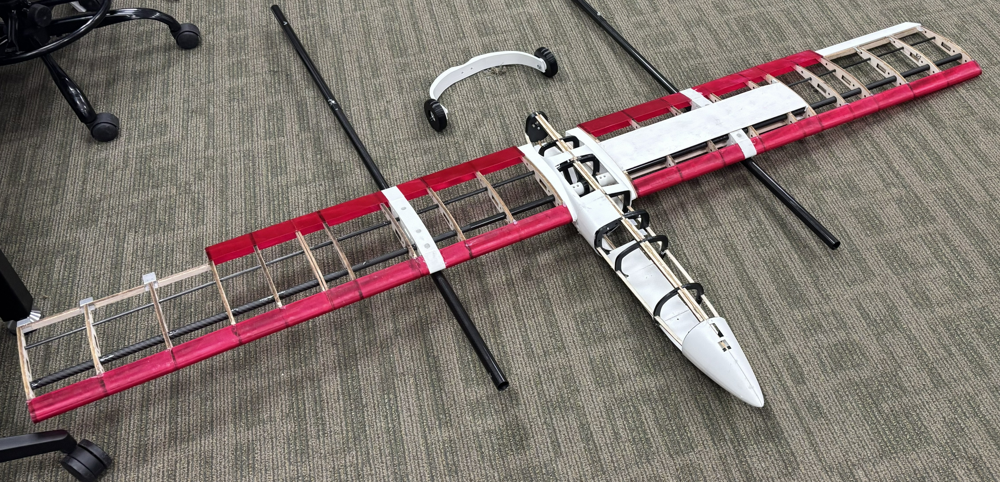
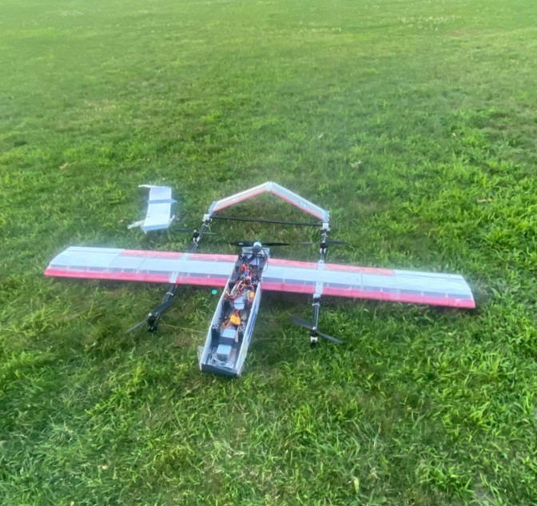
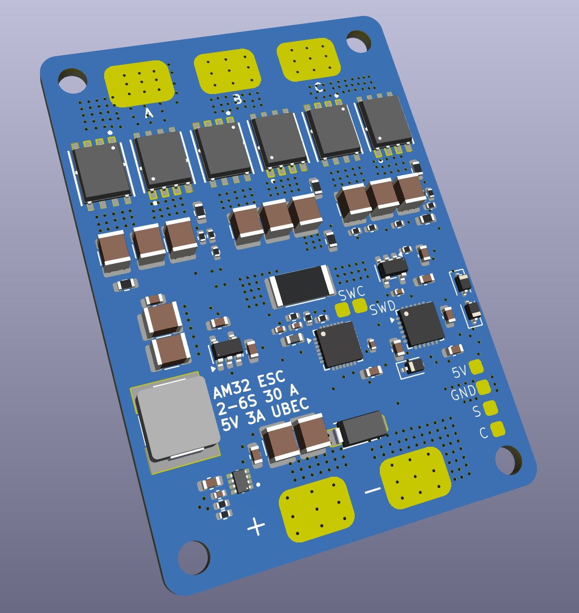

Hi, I’m Kyler
I’m a mechanical engineering student at Boston University concentrating in aerospace and focusing in UAV design, robotics, and custom electronics. I enjoy working at the intersection of mechanical and hardware design, integrating electromechanical and autonomous systems by handling everything from CAD design, board layout, to control algorithms.
Highlights
BU UAV Autonomous VTOL
I took part in the BU UAV Autonomous VTOL specializing in aerodynamic and mechanical design as well as electronic integration,
and led the construction of a 2-meter wingspan aircraft intended for search-and-rescue/terrainmapping missions, that was able to hover in plane utilizing GPS/Compass, fly autonomously to waypoints with an
onboard flight controller, and takeoff and land on its own with only input for the flight plan.


Electronic Speed Controller
I designed an ESC for a brushless DC motor as a PCB in KiCad, utilizing mosfets, a gate driver and microcontroller,
high current power planes, and pulse width modulation control by using a flight controller.
